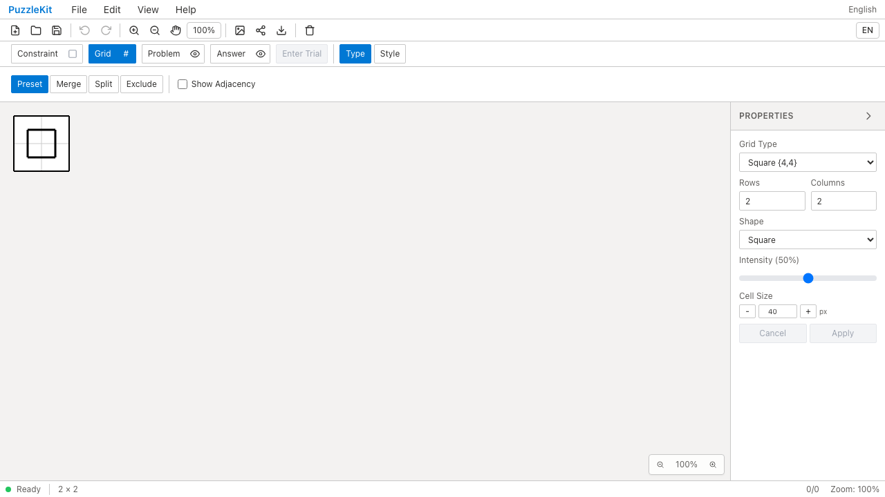
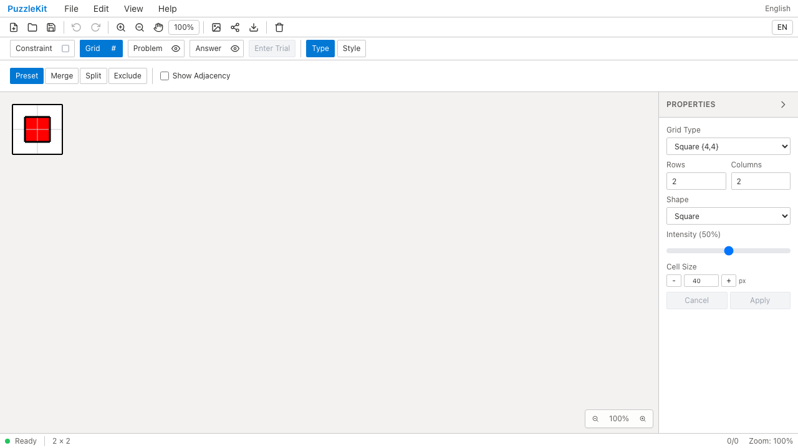
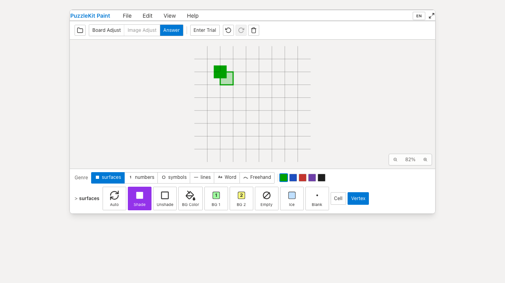
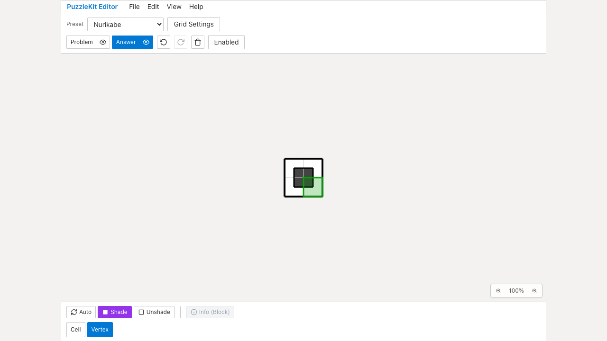
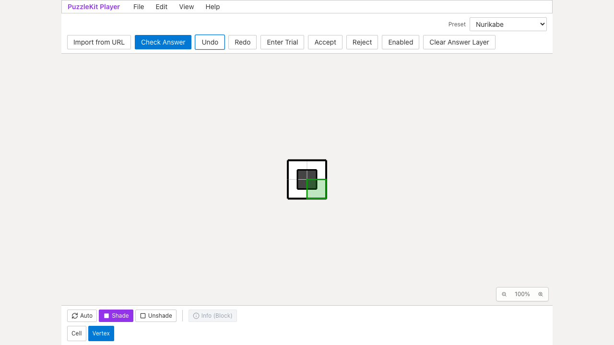
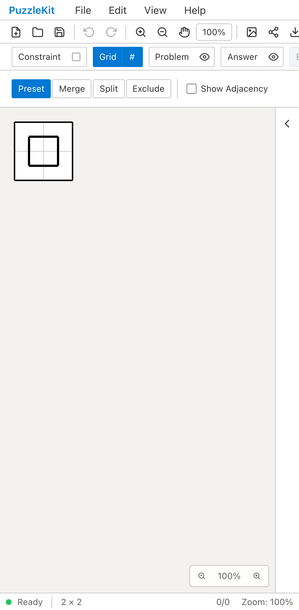
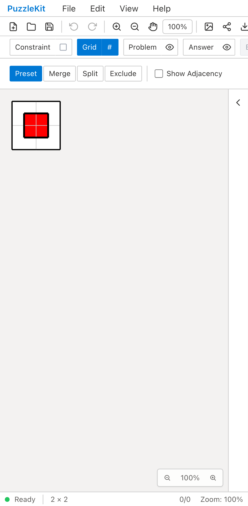
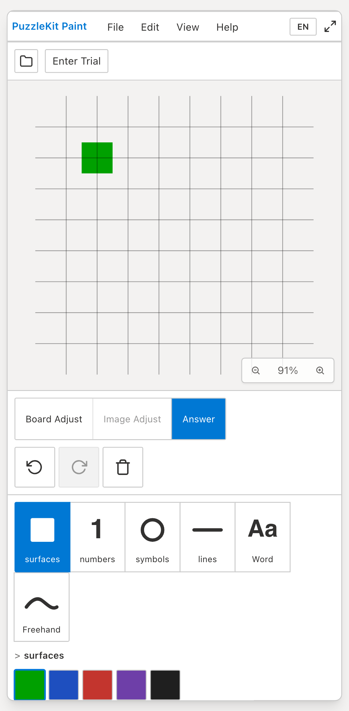
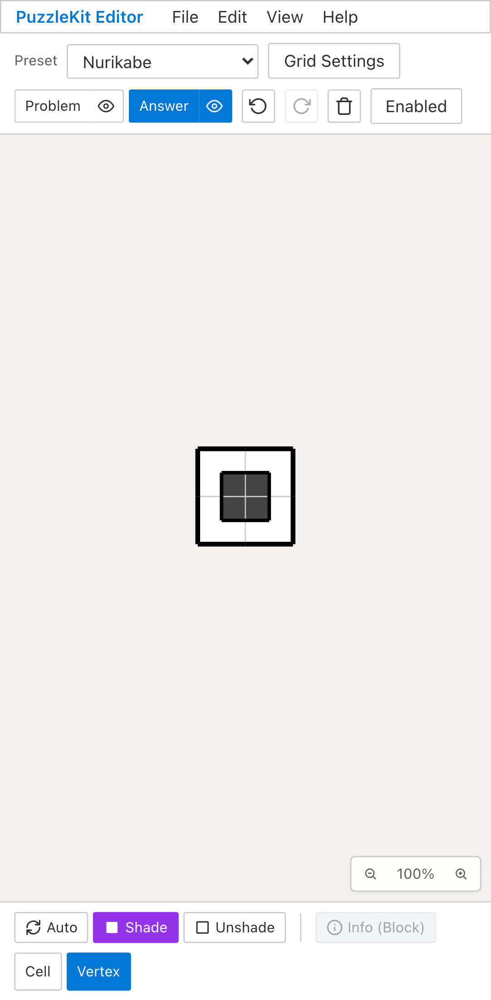
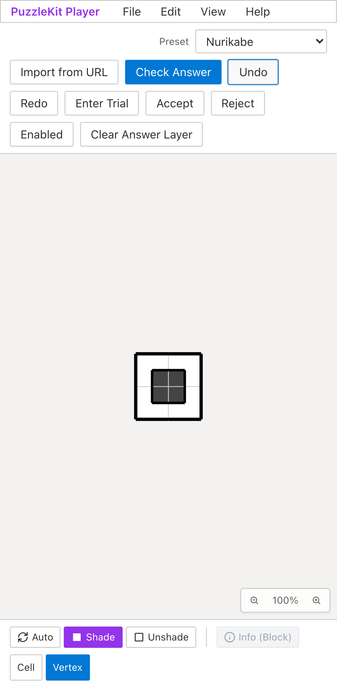

同じ保存盤面を開く。Beforeでは頂点塗りが表示されず、Afterではセル中心を通るループの内側を赤く塗り分けます。
Beforeは画素検証の失敗まで、Afterは入力・消去・Undo・保存・除外・六角形・旧Grid形式の操作まで録画。撮影時刻は同期していません。盤面再生成のID保持には未対応操作があり、この比較だけでマージ準備完了とはしていません。


paint

edit

player



paint

edit

player
